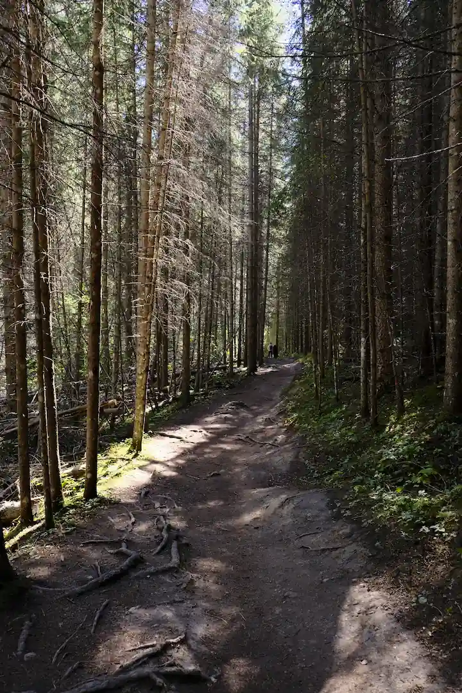
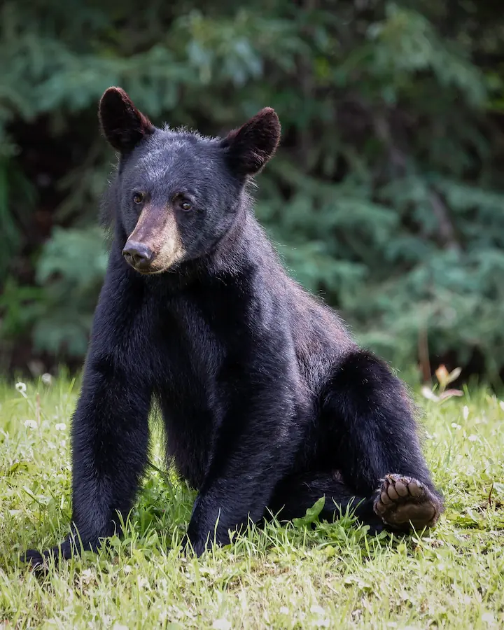
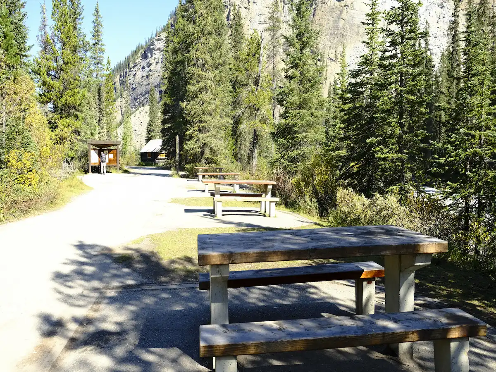

Everything Is Worth It

Hiking on easy and tranquil trail
The easy and tranquil trail leading to Wapta Falls in Yoho National Park is a gateway to natural splendor. As you step onto the path, the forest envelops you in a serene embrace. The trail, gently meandering through the woods, reveals the rhythmic dance of sunlight and leaves. With minimal elevation change, it invites a leisurely pace, ideal for absorbing the surrounding beauty. The distant murmur of the Kicking Horse River accompanies your journey, creating a soothing soundtrack. Approaching the falls, the sound swells, heralding the breathtaking sight of Wapta's cascading waters. It's a tranquil symphony, a testament to nature's timeless grace, etching an indelible experience in the heart of any hiker.

Wildlife encounter
Encountering wildlife, especially a black bear, in the Wapta Falls area is a humbling reminder of nature's raw beauty. The rustling leaves and distant calls of birds signal the presence of life all around. Suddenly, a majestic black bear emerges, moving with a quiet confidence, its fur a testament to the wildness it embodies. Time seems to stand still as you watch from a safe distance, a blend of awe and respect coursing through your veins. The bear's presence is a poignant reminder of the delicate balance that exists in these natural realms, urging a deeper appreciation for the untamed world we are privileged to share.

Family picnic
Having a family picnic in the Wapta Falls area is a delightful experience, surrounded by nature's embrace. The soft rustle of leaves provides a soothing soundtrack as you gather around sturdy picnic tables in a charming clearing. The scent of pine mingles with the delicious aroma of homemade sandwiches and fresh fruit you've brought along. Laughter and chatter fill the air, creating an atmosphere of warmth and togetherness. The children and your pet explore nearby, while adults share stories and savor the simple pleasures of the moment. It's a memory in the making, a cherished day to be recalled and cherished for years to come, forever etched in the family's collective heart.
Camping and unwinding with a breathtaking view
It takes on a whole new meaning as you wake up inside your tent, the door unzipped to reveal a scene of magnificent view. The world outside stretches out before you in all its natural glory. The gentle rustle of leaves harmonizes with birdsong, creating a soothing symphony. Morning light bathes the landscape in a golden glow, painting the sky with hues of pink and orange. From the comfort of your sleeping bag, you watch in awe as nature puts on its daily show. It's a moment of pure serenity, a snapshot of wilderness at its most captivating, forever etched in your memory.